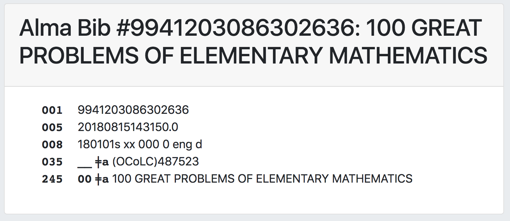
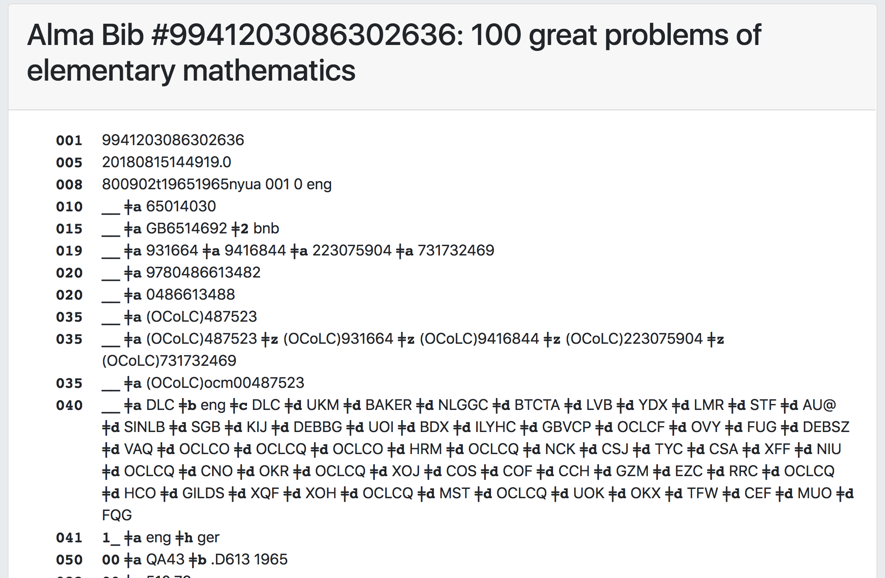

grima - whispering into alma's ear with APIs
This project is maintained by zemkat
This grima deletes all existing OCLC numbers from a bib record and then inserts an OCLC number (an 035 field with your input number preceded by “(OCoLC)”.
If you export from Connexion using OCLC number as a match point to overlay records, this can speed up the process – you will no longer have to edit the record in Metadata Editor, add the OCLC number, and then save and release it.
After the OCLC number is inserted, it will display the new contents of the bib record using the PrintBib grima. 
If you choose to immediately export the record from Connexion, you can just re-load the grima page afterward to confirm that the overlay was successful: 